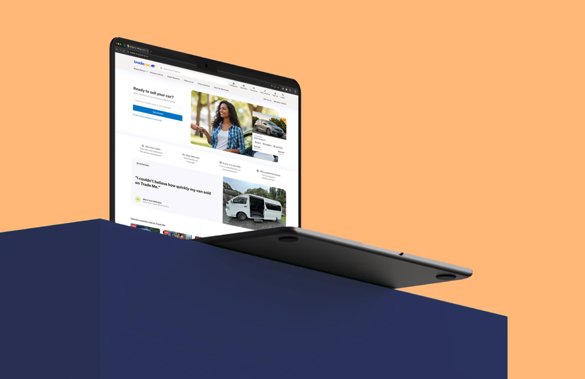

Trade Me is one of New Zealand’s largest digital platforms, serving 2.7 million active users across marketplaces including property, vehicles, jobs, and second-hand goods. With such a diverse audience and range of products, teams across the organisation needed better access to reliable customer insights to inform decision-making.
Objectives:
Scale UX research across the organisation by creating efficient processes, improving access to insights, and enabling teams to confidently conduct and use research. Make research faster, simpler, and more impactful

From interviews and user testing to large-scale surveys, I created research outputs that turned complex findings into beautiful, easy-to-understand reports that inspired action.
Our research projects at Trade Me went beyond internal decision-making, regularly gaining national media attention across digital publications, newspapers, and industry channels.


Outcomes
During my time at Trade Me, I scaled UX research from a small central capability into a more accessible, organisation-wide practice. Through improved processes, tooling, and coaching, I quadrupled research output in three years without increasing resources. The result was faster access to customer insights, stronger continuous discovery practices, and more teams confidently using research to guide decisions.